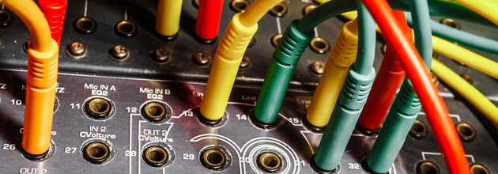
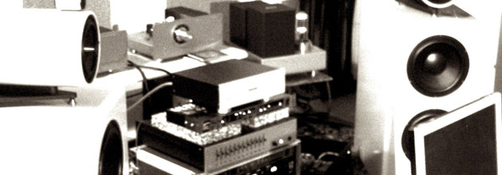

- 
- 
Audiosophia in collaboration with Bombanella Soundscapes and through original and innovative procedures, invented ANTIMASTERING, a process aimed at providing audio material with its hidden peculiarities. The special equipment we designed and built for this purpose enable to aquire information, that no equipment has ever been able to decode and press before, from any piece of music (even if already mixed and/or mastered).
Antimastering can recover a big amount of armonic information which seemed disguised, blurry or totally missing in the original piece of music, like details, space perspectives, silences and even performance purposes, giving the listener the stereoscopic impression of literally “looking at” the music.
RATES
Antimastering rate is 60 euros per song.
Antimastering trial rate is 30 euros per song plus shipping.
FTP return is possible, but we strongly recommend mail return in order not to frustrate the antimastering process.